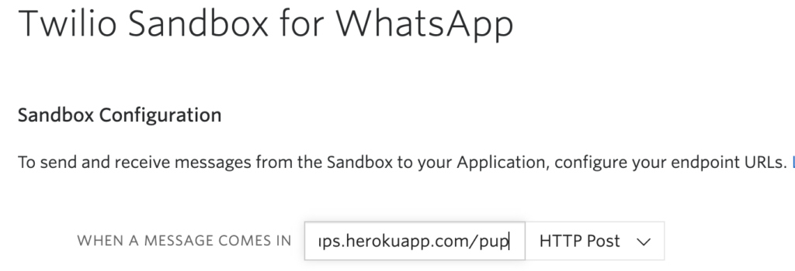

Send Pups Chatbot With Twilio and Whatsapp
Sometime back I built a fun Whatsapp chatbot thing with which you could have some limited interaction. It’s not really a full-fledged chatbot to be clear. It’s basically a Flask API that sends you a Whatsapp photo of a cute pup along with a somewhat intellectual quote all using Twilio’s Whatsapp API. I won’t go over setting up the Twilio Whatsapp Sandbox. There are plenty of guides for that around the web and it’s fairly basic.
The python code runs on Heroku as a backend API and is fairly simple. It has a /pup endpoint where the requests come in and get parsed. The parsing is minimal — check if the user has requested what we have or deny it if the request is something we can’t fulfill (to make it kind of act like a chatbot). You can see it in action at the end of the post or sign up yourself to try it.
Setup
Start with installing the four main packages we’ll need
mkdir send-pups
cd send-pups
python3 -m venv venv
venv/bin/activate
(venv) $ pip install flask requests twilio gunicorn
The requirements file for my python virtualenv contains a bunch of dependencies that get installed automatically. The gunicorn installation is purely for deployment to Heroku.
certifi==2019.11.28
chardet==3.0.4
click==7.1.1
Flask==1.1.1
gunicorn==20.0.4
idna==2.9
itsdangerous==1.1.0
Jinja2==2.11.1
MarkupSafe==1.1.1
PyJWT==1.7.1
pytz==2019.3
requests==2.23.0
six==1.14.0
twilio==6.37.0
urllib3==1.25.8
Werkzeug==1.0.0
Twilio Whatsapp Sandbox
The way this works is that Twilio corresponds with our Flask app using a webhook. In the Twilio console you can configure what you want your backend to be and for our purposes it points to my apps Heroku deployment endpoint (which ends in /pup where the API is accessible). With the webhook configured in Twilio it now knows where to reach the send-pups app. Also in Twilio’s console in the Whatsapp Sandbox it gives you a specific number that you need to join. As a user/client you send a specific phrase to the Twilio number which connects your phone to Twilio. Since it’s a trial number it’s not open to everyone. Once your phone number is connected it can then send messages which end up in the Flask API through the webhook.

Flask API
The Flask app is created in send-pups/bot.py which does all the grunt work of parsing the request that comes in from the Twilio webhook, pulling the photo and quote together, and sending back the response to Twilio which then sends it to Whatsapp through its trial number.
from flask import Flask, request
import requests
from twilio.twiml.messaging_response import MessagingResponse
app = Flask(__name__)
@app.route('/pup', methods=['POST'])
def bot():
incoming_msg = request.values.get('Body', '').lower()
resp = MessagingResponse()
msg = resp.message()
responded = False
# check to see if request contains the phrase "send pup" anywhere
if 'send pup' in incoming_msg:
r = requests.get('<https://api.quotable.io/random>')
if r.status_code == 200:
data = r.json()
quote = f'{data["content"]} \\n- {data["author"]}, as told to the pup'
else:
quote: 'I could not retrieve a quote at this time'
msg.body(quote)
r = requests.get('<https://api.thedogapi.com/v1/images/search>')
if r.status_code == 200:
data = r.json()
data = data[0]
pup = data['url']
msg.media(pup)
responded = True
# If no 'send pups' request, respond that it can only send pups atm
if not responded:
msg.body("Sorry, I only know about intellectual pups. Please say \\"send pup\\" if you'd like an intellectual pupper to appear")
return str(resp)
That’s pretty much it. I was hoping to make it a little more interactive eventually by adding more granularity to it. You could ask for certain breeds, for example, but it won’t really change the functionality of the app that much. What would be interesting is to be able to figure out a way to make the request two-phased where you could request for one thing, send a response, and then based on the user response send back another response. But I haven’t really looked much into that with the somewhat limited functionality of the Whatsapp API so far.
Deployment
I have this deployed on Heroku on a dyno that goes to sleep when not in use so the first request might take some time if it’s not been done in a while. The Procfile for Heroku deployment is using a gunicorn server instead of the Flask development server. The guide to setup a heroku deployment is here. The app is deployed/updated with a simple git push heroku master.
web: gunicorn bot:app
If you want to play around with send-pups, follow the four-step method to happiness:
- Add +14155238886 to whatsapp contacts. This is the Twilio Sandbox number I received.
- Send
join instead-exclaimedthrough whatsapp to the above number to sign up to receive intellectual pups - Type
send pupsto start receiving intellectual pups - Achieve happiness
Note: The trial account has a limited free balance that you can use to send and receive messages as part of testing your app. I’ll keep this going only as long as that balance is available. For production use you need to get your business case approved through Twilio as the Whatsapp API is not open to all just yet.
See it in action -